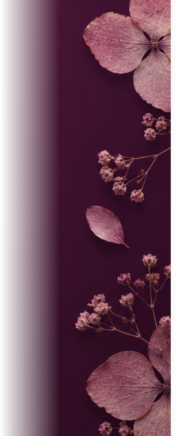
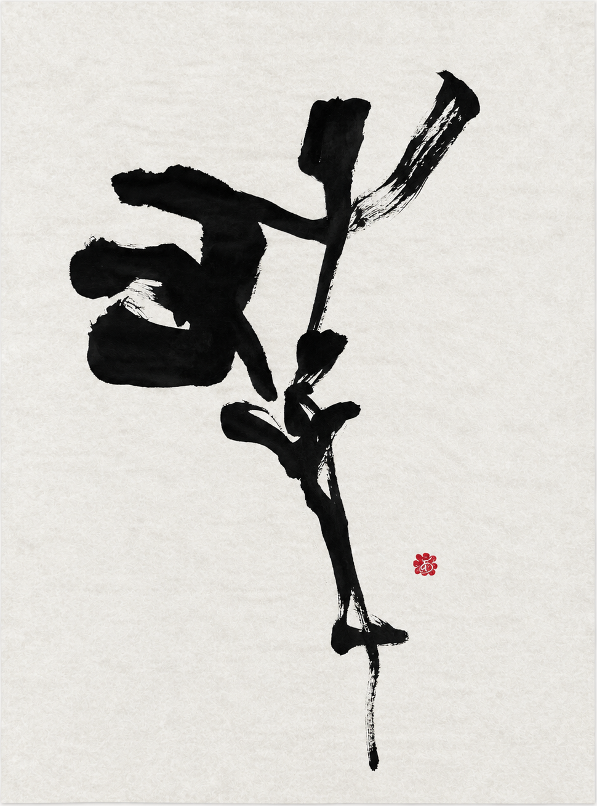
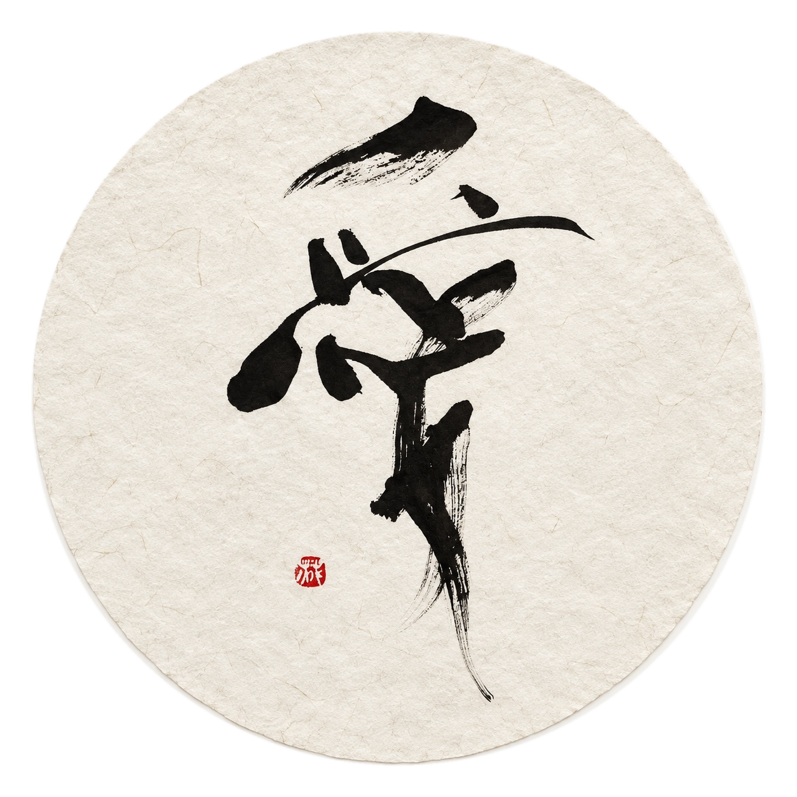
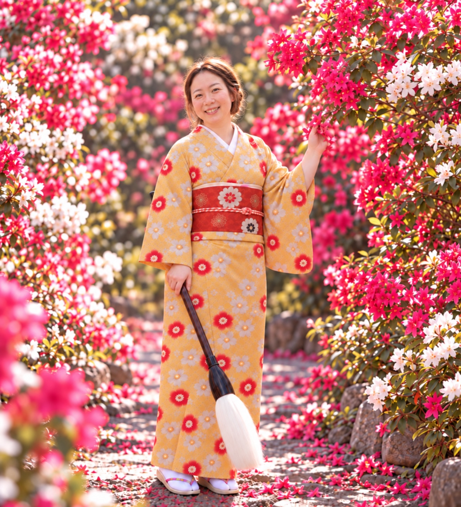

華
松浦 麻未
Calligrapher / ArtistScroll
Art Project / Flowers × Shodo
FLOWER
SHODO
花を捨てずに、
作品へ。
廃棄予定の花を押し花として残し、書と重ねて一つの作品へ。
FLOWER SHODOについて詳しく見る →

About
書の線と余白を大切にしながら、 素材や色と出会う作品を。
伝統的な書の美しさを軸に、文字だけにとらわれない表現を探求しています。 FLOWER SHODOをはじめ、オリジナルの書作品やオーダー制作など、 書が空間や暮らしの中で新しい表情を持つ作品を制作しています。
オーダーはこちら →Profile
Profile

松浦 麻未
Calligrapher / Artist
7歳より書道を始め、高校・大学では書道科で専門的に学ぶ。現在は福岡を拠点に、書作品やオーダー制作を中心に活動中。一児の母として育児と両立しながら日々制作を重ね、廃棄予定の花と書を重ねるアートプロジェクト「FLOWER SHODO」も展開。